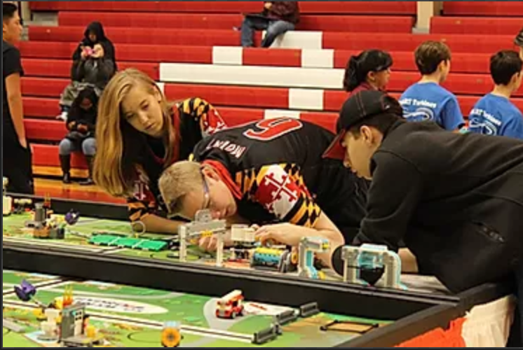
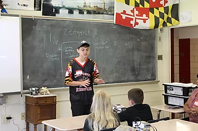
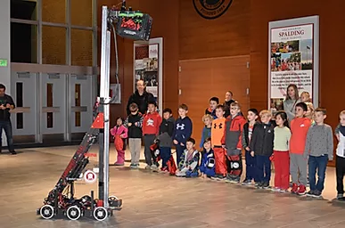
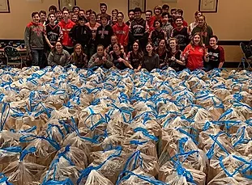
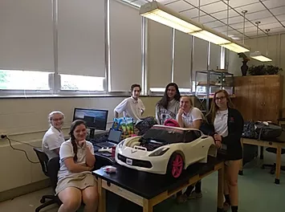
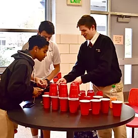
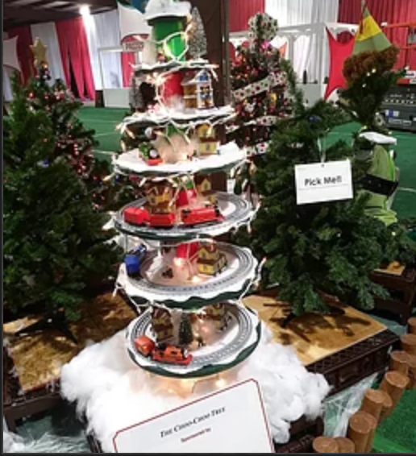

Catholic Robotics League (CRL):The Catholic Robotics League (or CRL for short) is a unification of the schools in the Catholic Archdiocese of Baltimore through robotics/STEM. CRL was founded in 2017 through the efforts of 4541 and has helped expand both STEM and FIRST in our community. The goal of CRL is to inspire, develop, support, and engage competitive robotics teams within the Catholic school system. We do this by providing financial assistance and networking opportunities for students, teachers, coaches, and mentors to foster camaraderie, competition, and compassion within our community. Within the Catholic Robotics League, we host scrimmages, workshops, STEM nights, robot demonstrations, expositions, and community service events. |
 |
Robotics Mentoring ProgramA responsibility we are taking as a team is the mentoring of FIRST teams in the Catholic Robotics League. Within our program, we send small groups of our members to middle/elementary schools in the Archdiocese of Baltimore to guide teams and new coaches in their build and competition seasons. Mentorship in the CRL makes FIRST more accessible to schools that don’t have robotics because it allows STEM teachers and school administrators to feel that there’s no risk in starting a FIRST team. Through this program, we can directly interact with the schools we serve and this allows us to provide resources like technology, information, and experience to member schools. |
 |
Robot DemonstrationsWe demonstrate our robots throughout the year whether it be a competition bot at an Elementary School STEM night or our T-shirt cannon bot at our football games. We try to present our robots as much as possible to raise awareness of the possibilities that technology offers. We often are invited to schools in the Catholic Robotics League to explain how our robots work and to let the kids interact with our bots. |
 |
St. John Neumann ChurchOur team often bands together to give back to the community that has already done so much for us. For five years, we have gotten together every Thanksgiving to pack meals for homeless people in the Annapolis area. Through the St. Vincent de Paul Society, we are able to pack and deliver over 500 bags containing full dinners for less fortunate families every single year. |
 |
Engineering Service Society (E.S.S)Engineering Service Society also known as ESS is a club at Archbishop Spalding High School that is sponsored by our team. ESS is made up of members from our team and students at Spalding. Engineering Service Society has the goal of helping kids with disabilities through organizations like E-Nable and Go Baby Go. E-Nable is an organization that allows us to produce 3D printed prosthetics to kids around the world. Go Baby Go is an organization that allows us to modify Power Wheels ride-on cars into therapeutic, motorized wheelchairs for kids that cannot walk or have trouble walking. Another goal is to get more people involved in STEM at our school. ESS is very successful at getting more people involved in engineering because it is a lesser commitment than FIRST, is for a good cause, and allows people to get service hours. |
 |
Gears In Motion ProgramThe GIM program (Gears In Motion) is a fun STEM activity geared towards elementary school students in order to teach the importance of working together like gears in a system. It centers around GIM, a gear-based toy that was designed, CADed, and 3D printed by members of 4541. Gears In Motion starts with a short but informative presentation on gears, which leads to the activity. After watching a tutorial video, the students then work together as a team to piece together the steps to the instructional booklet so that they can put together their GIMs as a team and learn to Turn Together... By the end of the program, the students involved will be able to take home their very own GIM. |
Boys and Girls clubOur team partners with the Boys and Girls Club of Annapolis, which stems out of a larger nationwide organization. 15 members of 4541 voluntarily signed up to mentor at our local Boys and Girls Club, committing to volunteer an hour every Thursday to aid in STEM-based activities with the kids. |
Innovation ChallengeInnovation Challenge is a monthly event that our team runs with the goal of getting more Spalding students involved in STEM. It allows students to be in teams of three and compete in a engineering based challenge. This activity is open to all Spalding students, not just engineering students. During an Innovation Challenge we invite one of our sponsors to come and talk about what their organization does and what opportunities they offer. The winning team of the challenge receive gifts cards for each member. |
 |
Kennedy KriegerTeam 4541 started a new tradition participating in the Kennedy Krieger Tree Festival, the largest charity-auction on the east coast. The festival featured over 800 unique trees, all to support the children of the Kennedy Krieger Institute. Designed by 4541 team members, the 2019 Choo-Choo Tree took 3rd place in the Created by Children category. |
 |